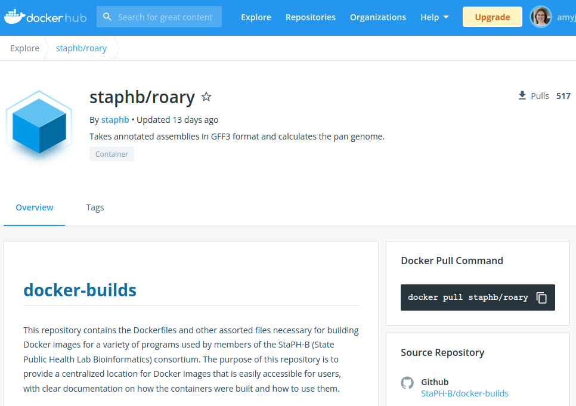

Pulling a Container Image to your System
There are two main Container Platforms: Singularity (soon to be known as Apptainer) and Docker. Singularity has the advantage that it can run both Singularity and Docker containers. This guide describes using the Singularity Platform.
Image Registries
The first thing you need to do is choose the a container.
Biocontainers and StaphB are both a good source of up-to-date and reliable container images for genomic analysis.
Container Images can also be found in:
- Sylabs.io Container Library
- Docker Hub
- Singularity Hub (no longer updated)
- GitHub
For example:

You can choose the version of the software tool; in the tab named 'tags' the different versions are listed.
The Command
To transfer a container image to your system using a URL use:
singularity pull SOURCE://PATH:TAG
Substitute:
SOURCEforlibrary,sylabsed,shubordockerPATHfor the filepath to the container image andTAGfor the version, e.g.latest, or2.4.5. The tag is optional.
Use ls to check the image has been downloaded. Singularity images are stored as a .sif file. If a Docker image is pulled, it will be converted to a Singularity image.
Examples
To pull a container image called lolcow from the sylabs registry:
singularity pull library://sylabsed/examples/lolcow
To pull a Docker container image with abricate version 1.0.0 from Docker Hub and convert to a Singularity container image:
singularity pull docker://staphb/abricate:1.0.0
To pull a Docker container image with the latest version of the assembly tool, shovill, from quay.io, and convert to a Singularity container image:
singularity pull docker://quay.io/staphb/shovill:latest